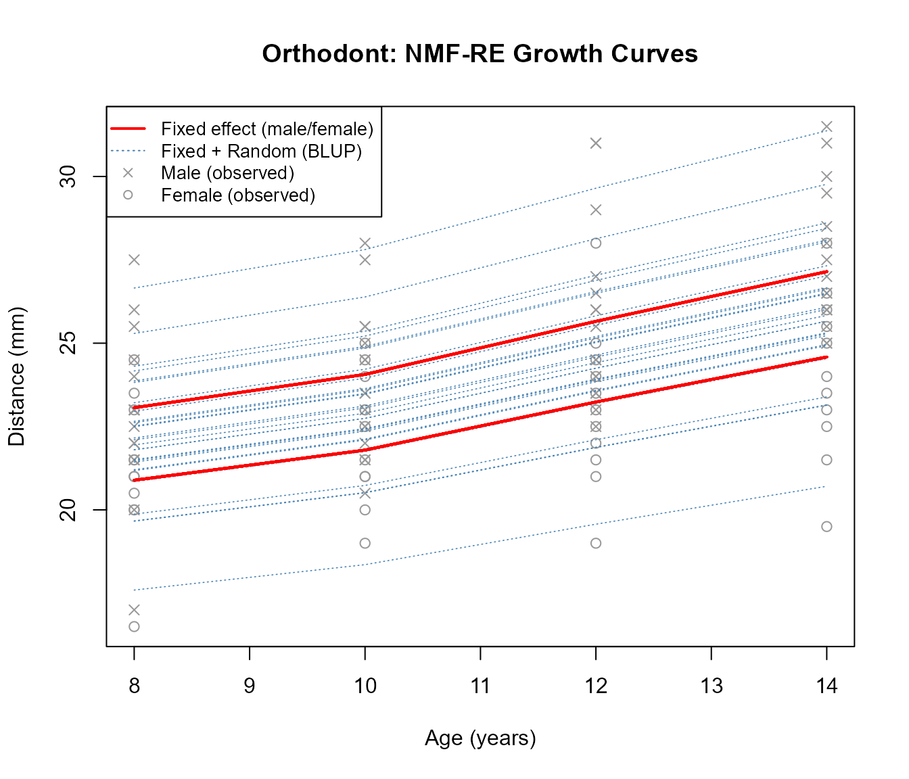
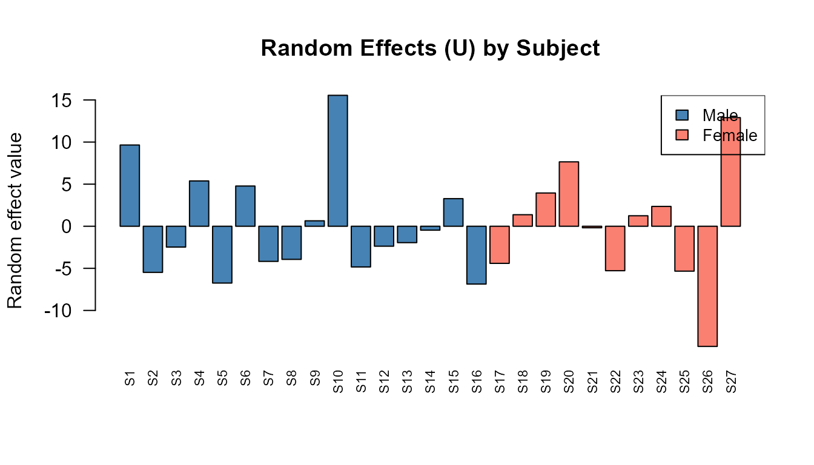
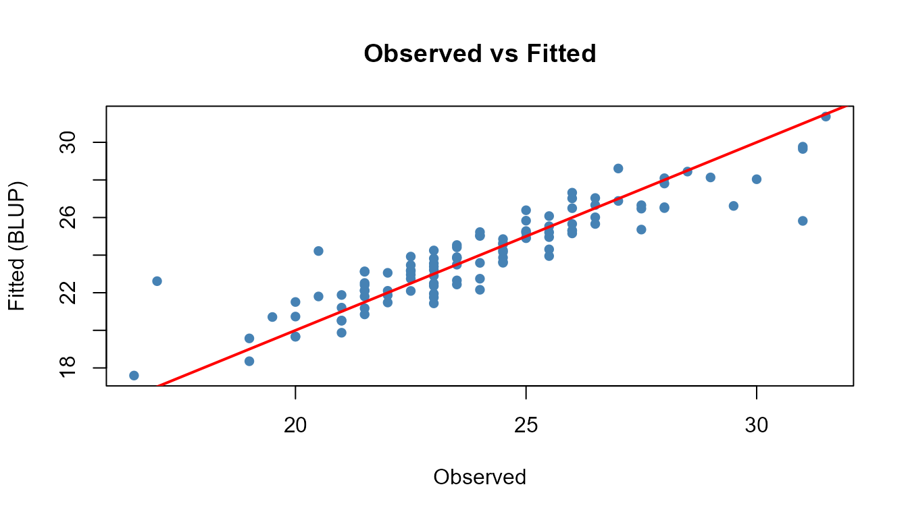

NMF-RE: Mixed-Effects Modeling with nmfkc
Source:vignettes/nmf-re-with-nmfkc.Rmd
nmf-re-with-nmfkc.RmdIntroduction
This vignette demonstrates NMF-RE (Non-negative
Matrix Factorization with Random Effects), a mixed-effects extension of
NMF implemented in the nmfkc package.
Why Mixed Effects?
Standard NMF with covariates models the data as:
where captures systematic (fixed) effects of covariates on latent scores. However, in many applications — such as longitudinal studies, panel data, or clustered observations — individuals exhibit unit-specific deviations that cannot be explained by covariates alone.
NMF-RE addresses this by adding random effects :
- (): Non-negative observation matrix (e.g., repeated measurements over time points for subjects).
- (): Non-negative basis matrix learned from data.
- (): Coefficient matrix for covariate effects.
- (): Covariate matrix (e.g., intercept, sex, treatment).
- (): Random effects matrix capturing individual deviations.
- : Residual noise with variance .
The random effects follow a ridge-type prior controlled by variance , and the penalty determines the degree of shrinkage.
Key Features
-
Automatic regularization:
dfU.cap.ratecontrols the effective degrees of freedom consumed by , preventing overfitting. - Wild bootstrap inference: Standard errors, z-values, p-values, and confidence intervals for without repeated constrained re-optimization.
- Trace-based ICC: Quantifies the proportion of variance attributable to random effects.
1. Data: Orthodont (Longitudinal Growth)
We use the Orthodont dataset from the nlme
package: orthodontic distance measurements for 27 children at ages 8,
10, 12, and 14. The covariate of interest is sex (Male/Female).
library(nmfkc)
#> Package: nmfkc (Version 0.7.0 , released on 28 2 2026 )
#> https://ksatohds.github.io/nmfkc/
library(nlme)
#> Warning: package 'nlme' was built under R version 4.4.3
data(Orthodont)
head(Orthodont)
#> Grouped Data: distance ~ age | Subject
#> distance age Subject Sex
#> 1 26.0 8 M01 Male
#> 2 25.0 10 M01 Male
#> 3 29.0 12 M01 Male
#> 4 31.0 14 M01 Male
#> 5 21.5 8 M02 Male
#> 6 22.5 10 M02 Male1.1 Prepare the Observation Matrix Y
Each column of is a subject, each row is a time point (age). Since there are 4 ages and 27 subjects, is .
Y <- matrix(Orthodont$distance, nrow = 4, ncol = 27)
colnames(Y) <- paste0("S", 1:27)
rownames(Y) <- paste("Age", c(8, 10, 12, 14))
Y[, 1:6]
#> S1 S2 S3 S4 S5 S6
#> Age 8 26 21.5 23.0 25.5 20.0 24.5
#> Age 10 25 22.5 22.5 27.5 23.5 25.5
#> Age 12 29 23.0 24.0 26.5 22.5 27.0
#> Age 14 31 26.5 27.5 27.0 26.0 28.51.2 Prepare the Covariate Matrix A
We create a
covariate matrix with an intercept row and a binary male
indicator.
male <- ifelse(Orthodont$Sex[seq(1, 108, 4)] == "Male", 1, 0)
A <- rbind(intercept = 1, male = male)
A[, 1:6]
#> [,1] [,2] [,3] [,4] [,5] [,6]
#> intercept 1 1 1 1 1 1
#> male 1 1 1 1 1 12. Selecting dfU Cap Rate
Before fitting the model, we use nmfre.dfU.scan() to
scan different regularization levels. The dfU cap rate
limits how many effective degrees of freedom the random effects
can consume, preventing overfitting.
The scan evaluates rates from 0.1 to 1.0 (where 1.0 means no cap). Key columns in the output:
- dfU: Effective degrees of freedom actually used.
-
safeguard: Whether
dfUstayed below the cap (TRUE= safe). -
hit: Whether
was updated freely (
TRUE= unconstrained). - ICC: Trace-based Intraclass Correlation Coefficient.
scan_result <- nmfre.dfU.scan(1:10/10, Y, A, Q = 1)
scan_result
#> rate dfU.cap dfU safeguard hit converged tau2 sigma2 ICC
#> 1 0.1 2.7 2.70 FALSE TRUE TRUE 0.443 1 0.0270
#> 2 0.2 5.4 5.40 FALSE TRUE TRUE 0.996 1 0.0588
#> 3 0.3 8.1 5.42 TRUE FALSE TRUE 1.000 1 0.0590
#> 4 0.4 10.8 5.42 TRUE FALSE TRUE 1.000 1 0.0590
#> 5 0.5 13.5 5.42 TRUE FALSE TRUE 1.000 1 0.0590
#> 6 0.6 16.2 5.42 TRUE FALSE TRUE 1.000 1 0.0590
#> 7 0.7 18.9 5.42 TRUE FALSE TRUE 1.000 1 0.0590
#> 8 0.8 21.6 5.42 TRUE FALSE TRUE 1.000 1 0.0590
#> 9 0.9 24.3 5.42 TRUE FALSE TRUE 1.000 1 0.0590
#> 10 1.0 27.0 5.42 TRUE FALSE TRUE 1.000 1 0.0590Interpreting the Scan
A good dfU.cap.rate satisfies two criteria:
- safeguard = TRUE: The cap is not overly binding.
- hit = TRUE: The model converges to a natural solution without the cap forcing an artificial penalty.
Choose the smallest rate where both conditions hold. This balances model flexibility against overfitting.
3. Fitting the NMF-RE Model
Based on the scan, we select dfU.cap.rate = 0.2 and fit
the model with rank
(a single latent trend). The prefix argument labels the
basis.
res <- nmfre(Y, A, Q = 1, dfU.cap.rate = 0.2, prefix = "Trend")3.1 Model Summary
summary() displays variance components, fit statistics,
and the coefficient table with significance stars.
summary(res)
#> NMF-RE: Y(4,27) = X(4,1) [C(1,2) A + U(1,27)]
#> Iterations: 2 (converged, epsilon = 1e-05)
#> R-squared: 0.5654 (XB+blup), 0.4167 (XB)
#>
#> Variance components:
#> sigma2 = 1 (residual)
#> tau2 = 0.9961 (random effect)
#> lambda = 1.004 (sigma2 / tau2)
#> ICC = 0.0588 (tau2*tr(X'X) / (tau2*tr(X'X) + sigma2*P))
#> dfU = 5.40 <= 5.40 (cap rate = 0.20)
#>
#> Coefficients:
#> Estimate Std. Error (Boot) z value Pr(>z)
#> intercept:Trend1 90.393 2.471 2.452 36.58 <2e-16 ***
#> male:Trend1 9.606 3.056 2.977 3.14 0.0008356 ***
#> ---
#> Signif. codes: 0 '***' 0.001 '**' 0.01 '*' 0.05 '.' 0.1 ' ' 1Understanding the Output
Variance components:
- : Residual variance (measurement noise).
- : Random effect variance (individual heterogeneity).
- ICC: Proportion of variance from random effects. Higher ICC means stronger individual differences relative to noise.
Coefficient table ():
- Estimate: Effect of each covariate on the latent trend.
- Std. Error: From wild bootstrap.
- Pr(>|z|): One-sided p-value (H0: vs H1: ), appropriate because is non-negative.
R-squared:
- (XB+blup): Fit including both fixed and random effects.
- (XB): Fit from fixed effects only — the gap shows how much random effects improve the fit.
4. Visualization
We plot the growth curves to see how the model captures both population-level trends (fixed effects) and individual deviations (random effects).
age <- c(8, 10, 12, 14)
plot(age, res$XB[, 1], type = "n", ylim = range(Y),
xlab = "Age (years)", ylab = "Distance (mm)",
main = "Orthodont: NMF-RE Growth Curves")
# Plot observed data points
for (j in 1:27) {
pch_j <- ifelse(male[j] == 1, 4, 1)
points(age, Y[, j], pch = pch_j, col = "gray60")
}
# Plot individual predictions (fixed + random effects)
for (j in 1:27) {
lines(age, res$XB.blup[, j], col = "steelblue", lty = 3, lwd = 0.8)
}
# Plot population-level fixed effects (two lines: male and female)
for (j in 1:27) {
lines(age, res$XB[, j], col = "red", lwd = 2)
}
legend("topleft",
legend = c("Fixed effect (male/female)", "Fixed + Random (BLUP)",
"Male (observed)", "Female (observed)"),
lwd = c(2, 1, NA, NA), lty = c(1, 3, NA, NA),
pch = c(NA, NA, 4, 1),
col = c("red", "steelblue", "gray60", "gray60"),
cex = 0.85)
Interpreting the Plot
- Red solid lines: Population-level fitted values from fixed effects (). There are two distinct curves — one for males (higher) and one for females (lower) — reflecting the sex effect in .
- Blue dashed lines: Individual-level predictions (). Each line is shifted from the population curve by the subject’s random effect , capturing personal growth trajectories.
- Gray points: Observed measurements. Crosses () for males, circles () for females.
5. Examining Learned Components
5.1 Basis Matrix X
The basis represents the latent temporal pattern shared across all subjects.
cat("Basis X (temporal pattern):\n")
#> Basis X (temporal pattern):
print(round(res$X, 4))
#> Trend1
#> Age 8 0.2308
#> Age 10 0.2409
#> Age 12 0.2566
#> Age 14 0.2717Since , there is one basis vector. Its shape shows how the latent factor manifests across the four ages. The column is normalized to sum to 1.
5.2 Coefficient Matrix
maps covariates to latent scores:
cat("Coefficient matrix (Theta):\n")
#> Coefficient matrix (Theta):
print(round(res$C, 4))
#> intercept male
#> Trend1 90.3934 9.6059-
intercept: Baseline level of the latent trend for females. -
male: Additional contribution for males. A significant positive value indicates that males have higher orthodontic distances on average.
5.3 Random Effects U
captures individual deviations. Subjects with positive values grow faster than the population average; negative values indicate slower growth.
barplot(res$U[1, ], names.arg = colnames(Y),
las = 2, cex.names = 0.7,
col = ifelse(male == 1, "steelblue", "salmon"),
main = "Random Effects (U) by Subject",
ylab = "Random effect value")
legend("topright", fill = c("steelblue", "salmon"),
legend = c("Male", "Female"), cex = 0.85)
6. Model Diagnostics
6.1 Convergence
Check that the algorithm converged properly:
cat("Converged:", res$converged, "\n")
#> Converged: TRUE
cat("Iterations:", res$iter, "\n")
#> Iterations: 2
cat("Stop reason:", res$stop.reason, "\n")
#> Stop reason: epsilon
plot(res$objfunc.iter, type = "l",
xlab = "Iteration", ylab = "Objective function",
main = "Convergence Trace")6.2 Residual Analysis
Compare the fitted values against the original data:
residuals <- Y - res$XB.blup
cat("Mean absolute residual (BLUP):", round(mean(abs(residuals)), 4), "\n")
#> Mean absolute residual (BLUP): 1.5118
cat("Mean absolute residual (fixed):", round(mean(abs(Y - res$XB)), 4), "\n")
#> Mean absolute residual (fixed): 1.7612
# Fitted vs Observed
plot(as.vector(Y), as.vector(res$XB.blup),
xlab = "Observed", ylab = "Fitted (BLUP)",
main = "Observed vs Fitted", pch = 16, col = "steelblue")
abline(0, 1, col = "red", lwd = 2)
7. Comparison: With and Without Random Effects
To appreciate the value of random effects, compare NMF-RE with a standard NMF covariate model (no random effects).
# Standard NMF with covariates (no random effects)
res_fixed <- nmfkc(Y, A = A, Q = 1)
#> Y(4,27)~X(4,1)C(1,2)A(2,27)=XB(1,27)...0sec
cat("=== Standard NMF (fixed effects only) ===\n")
#> === Standard NMF (fixed effects only) ===
cat("R-squared:", round(1 - sum((Y - res_fixed$XB)^2) / sum((Y - mean(Y))^2), 4), "\n\n")
#> R-squared: 0.4161
cat("=== NMF-RE (fixed + random effects) ===\n")
#> === NMF-RE (fixed + random effects) ===
cat("R-squared (XB): ", round(res$r.squared.fixed, 4), "\n")
#> R-squared (XB): 0.4167
cat("R-squared (XB+blup): ", round(res$r.squared, 4), "\n")
#> R-squared (XB+blup): 0.5654
cat("ICC: ", round(res$ICC, 4), "\n")
#> ICC: 0.0588The improvement from fixed-only to BLUP quantifies the contribution of individual random effects.
Summary
NMF-RE provides a principled way to model individual heterogeneity in NMF:
| Step | Function | Purpose |
|---|---|---|
| 1 | nmfre.dfU.scan() |
Select regularization level |
| 2 | nmfre() |
Fit the mixed-effects model |
| 3 | summary() |
Examine variance components and inference |
When to use NMF-RE:
- Longitudinal or repeated-measures data where subjects differ systematically.
- Panel data with unit-level heterogeneity.
- Any NMF application where fixed covariates alone leave structured residual variation.
For more details on the underlying methodology, see:
- Satoh, K. (2026). “Non-negative Matrix Factorization with Random Effects.” Working paper.